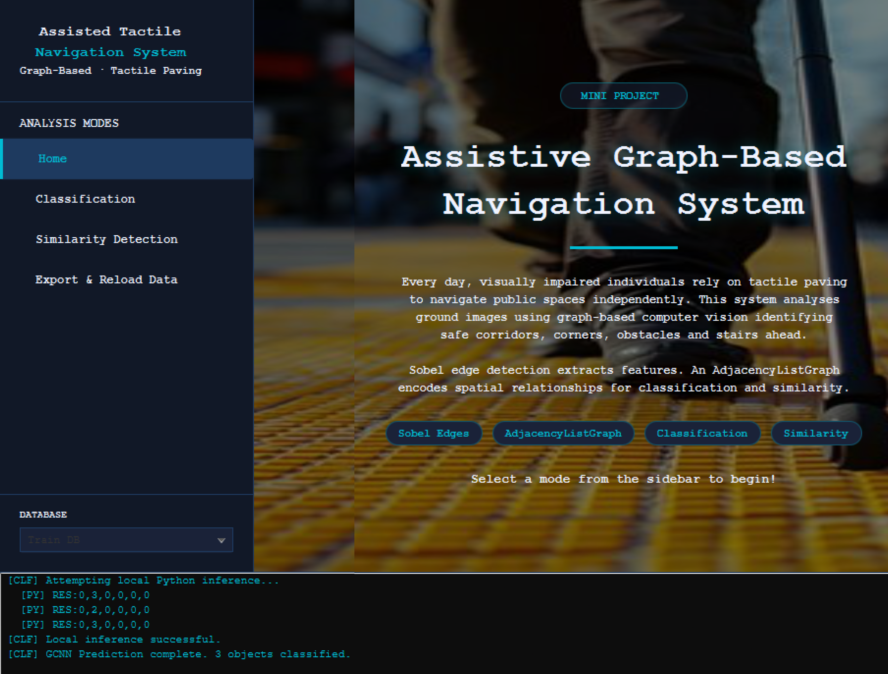
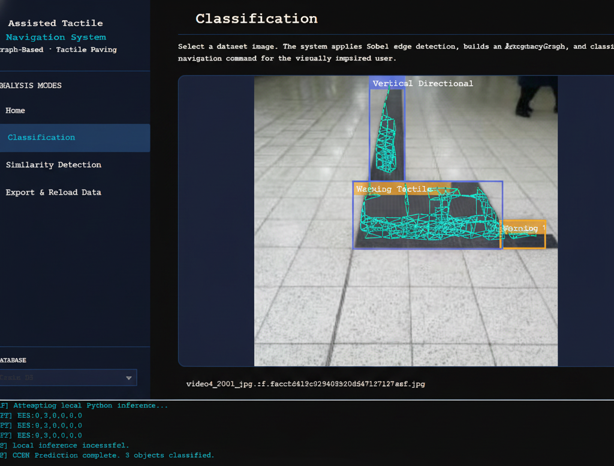
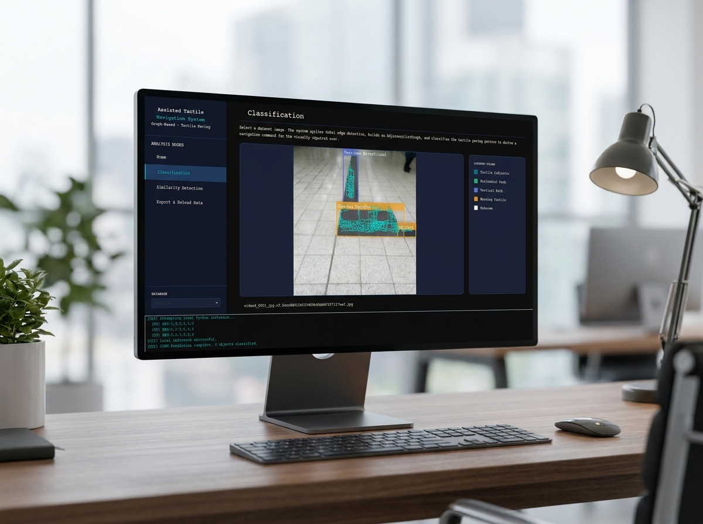

Assistive Graph-Based Navigation
A computer vision system that helps visually impaired people move through public spaces more safely. By reading the textured paving laid down specifically to guide them — and spotting nearby obstacles and stairs — the system turns the ground itself into a source of reliable navigation cues.
A walkthrough of the system detecting tactile paving and hazards.
The Mission
In cities around the world, the ground is fitted with tactile paving — those raised bumps and bars you feel underfoot at crossings, train platforms, and along walkways. They exist to guide people who are blind or have low vision. But these surfaces can be worn down, obscured, or simply hard to interpret, and they say nothing about obstacles standing in the way.
This project set out to give visually impaired pedestrians a second pair of eyes. It looks at images of the ground ahead, recognises the type of tactile paving present, and flags hazards such as obstacles and stairs — so the person can be guided toward safe paths and warned away from danger, with confidence.
Accessibility
Built to support independent, safer mobility
Hybrid build
Java desktop interface + Python AI engine
Academic
Developed as a university research project
How It Works
A simple three-step idea, explained without the jargon.
See the ground
The system takes an image of the path ahead and cleans it up, sharpening the edges and shapes so the important patterns in the paving stand out clearly.
Map the layout
Rather than judging the image pixel-by-pixel, the system maps how the different parts of the scene relate to one another in space — a richer, more human way of "reading" a layout.
Decide & guide
A trained AI model then identifies the type of paving and highlights safe paths, obstacles, and stairs — the information needed to guide the user.
In plain terms: the project combines a technique that traces the outlines of what the camera sees with a "graph" approach that understands how things are arranged relative to each other. Together they let the AI recognise guidance patterns on the ground far more reliably than looking at the picture alone.
What It Detects
The core capabilities that make the system useful in the real world.
Safe paths
Recognises the guidance paving that marks where it is safe to walk, helping keep the user on a known, intended route.
Obstacles
Spots objects in the way so the user can be warned before reaching them, reducing the risk of collisions and trips.
Stairs & level changes
Identifies steps and stairs — among the most dangerous features for someone who cannot see them — so they can be approached with caution.
Easy-to-use interface
A clean desktop application ties everything together, making it straightforward to run the system and view its results.
Project Gallery
Screens and results from the system. (Replace the placeholders with your own images.)



Technology with purpose
This project is a demonstration of how computer vision and machine learning can be applied to real human problems — making everyday environments more accessible and safer for everyone.
Watch the full demo